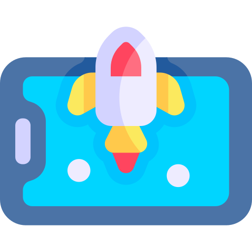
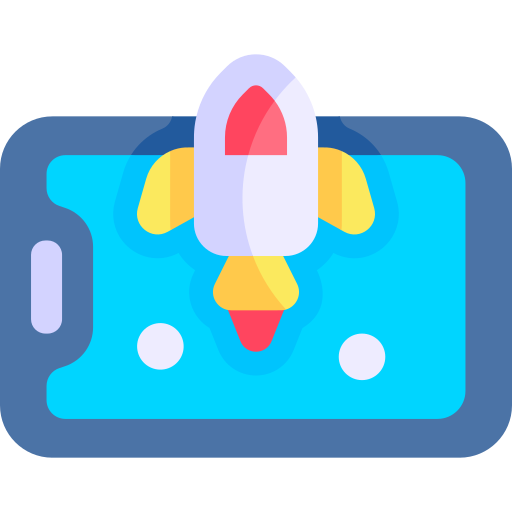
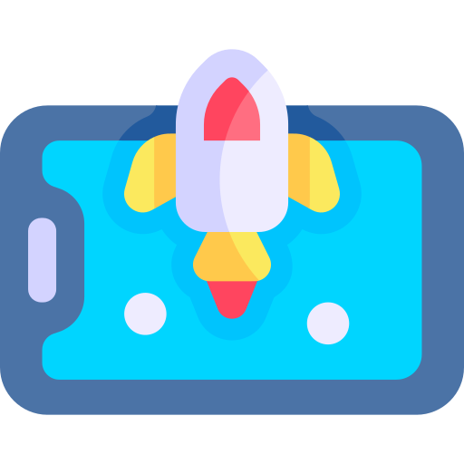
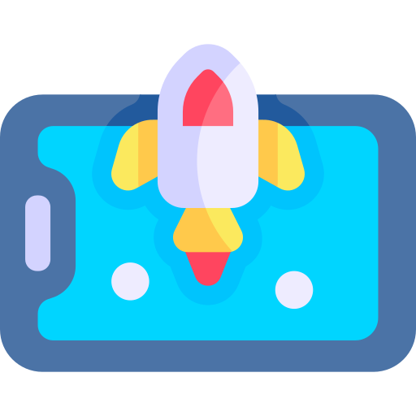

Here's a selection of some recent projects. I created my games with Unity and C#, HTML, Javascript and CSS.
A 2D Platformer game. There are several levels which I created using the Tilemap of Unity. The Player can move with the WASD keys. He can use normal attacks with the Mousebutton and can dashe with the SHIFT key. The Player can collect coins and with coins he can buy different items from NPCs like a sword, a bow, arrows or different pots. The Player can switch between his weapons. With each weapon come two abilities. They can be activated by pressing Q and E key. Each ability costs energy and has cooldown. Also, pots like Heal pots, Energy pots, Cooldown pots and Damage Boost pots can be bought from NPCs.
VIEW ON GITHUB
Controls: Movement with WASD keys
A 2D Car-Driver game. The Player has to find the pink packages and
bring them to the blue customer. When you drive into obstacles you
slow down a little bit. But if you drive through the round yellow
circles you get a small speed boost.
Controls: Movement with WASD keys/Shooting with spacebar
A 2D
Laser Defender game. The Player must survive as long as possible. You
get points for each enemy you kill. The enemies move along different
paths. The game is over when the Player runs out of health points.
Controls: Movement with WASD/Shooting with spacebar
A 2D Space
Invaders game. The player controls a spaceship, which he can move left
and right at the bottom of the screen. Each level starts with several
rows of regularly arranged aliens, which constantly move horizontally
while gradually descending, attacking the player with projectiles.
Controls: Ball movement with Touchevent
2D/Mobile Ball Shooter game. Only playable in mobile format. The
player can release the ball by pulling in the opposite direction and
throw by releasing.
A 2D/Mobile Laser Defender game. The Player controls a spaceship that can move within the screen. From below, above, right and left enemies spawn permanently which try to drive into the Player. For each collision of the enemy with the Player, he loses one health point. The game is over when the Player has no more health points.
VIEW ON GITHUBA 2D Quiz game. The Player must answer computer science quiz questions. At the beginning you can choose between categories. At the end there is an evaluation of the results.
VIEW ON GITHUB
Controls: Paddle movement by mouse pointing
A 2D Block-Braker game. The Player controls the paddle and must try to
keep the ball in the game and destroy all the blocks.
A VR-Handball game. The Player can grab the ball with the fylsticks and try to throw it into the goal.
VIEW ON GITHUBLove coding or japan as much as I do? We can code while speaking japanese!
CONTACT ME